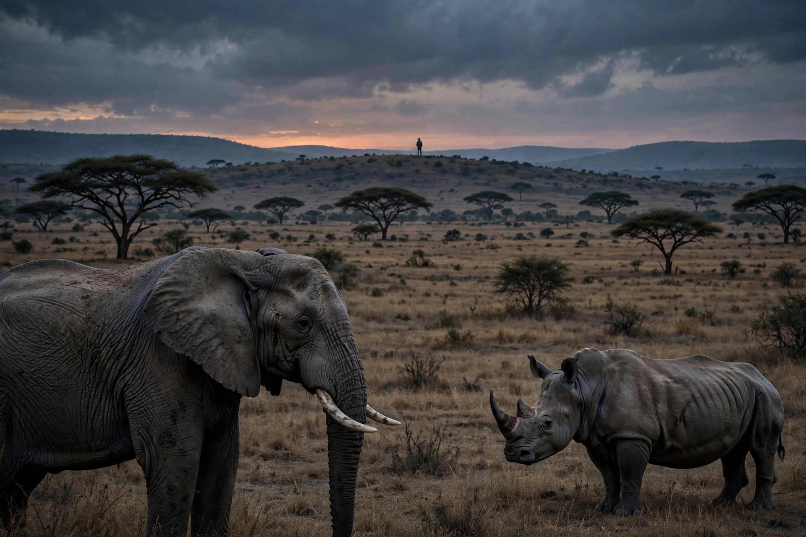

Poaching is the illegal hunting or capturing of wild animals, usually associated with land use rights. Poaching was once performed by impoverished peasants for subsistence; today it is often driven by commercial trade in animal parts such as ivory, horn, skin and bushmeat.
| Poaching | |
|---|---|
 |
Poaching threatens biodiversity, drives species such as elephants and rhinoceroses toward decline, spreads disease via bushmeat, and undermines conservation and tourism economies.
Measures include ranger patrols, CITES trade regulation, demand reduction, community conservation and technology such as drones and DNA forensics. See Wildlife conservation and Ivory trade.
In medieval England poaching deer in royal forests was severely punished; game laws became a source of social conflict for centuries.